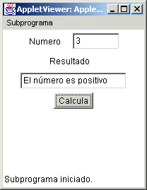
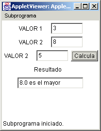
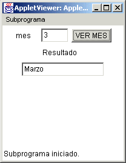
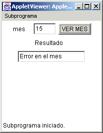
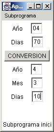
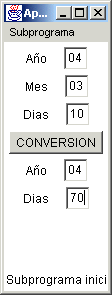

Módulo 2:
Estatutos de Control

1. Decisiones
|
Módulo 2:
Estatutos de Control
1. Decisiones |
|
Este estatuto nos sirve para realizar alguna(s) instrucción(es) en vez de otra(s) de acuerdo a alguna condición que resulte verdadera, analizaremos la sintaxis de las decisiones en Java y después utilizaremos algunos ejemplos. Sintaxis if ( condición estatuto; else // la parte else es opcional estatuto; En caso de requerir más de un estatuto es necesario usar llaves. if ( condición ) { else {
// la parte else es opcional
Ejecución del if La estructura if (sin else), ejecuta el estatuto solo cuando la condición es verdadera; en caso de que sea falsa brinca el estatuto (o estatutos en caso de tener más de uno entre llaves)
La estructura de selección if / else , ejecuta la(s) accion(es) después de la parte if cuando la condición es verdadera; en caso de que sea falsa ejecuta la(s) acción(es) que está(n) después del else. Ejemplo if (promedio >= 70)
if´s anidados Se dice que hay if anidados cuando existe un if/else dentro de otra estructura if/else Ejemplo: Determinar si un número es positivo, cero o negativo. if (num >
0) El applet quedaria como sigue:

En el applet anterior hicimos uso del constructor TextField(entero) donde entero es un número entero para definir el número de espacios que se quieren usar en el campo de texto creado.
Si tenemos el siguiente fragmento de código: if (condición 1) Y queremos que el else pertenezca al primer if debemos poner {} para determinar donde termina el segundo if: if (condición 1)
Ejemplos de Programas A continuación tendrás algunos ejemplos de programas en C++:
Ejemplo I:
4x + 3x2y - 2y si x > 0 , y >= 0 e(x,y) = x2 - 4(y - x) + y2 si x < 0 , y >= 0 x2 + y + y (x- 2) en cualquier otro caso
Ejemplo II: Programa que lee 3 números enteros diferentes y los despliega de mayor a menor.
La aplicación ejecutando funcionaría como se observa:  Estatuto Switch Se utiliza para ejecutar acciones diferentes según el valor
de una expresión o variable. Consiste en una serie de de etiquetas case
La acción 1 se ejecuta si la variable adquiere el valor1.
Estatuto break Cuando se encuentra una sentencia case que concuerda con el valor del switch se ejecutan las sentencias que le siguen y todas las demás a partir de ahí, a no ser que se introduzca una sentencia break para salir de la sentencia switch. Ejemplo : Programa que pide un número de mes y escribe la cantidad de días que tiene.
Algunos ejemplos de esta aplicación son:
 

|
| Ejercicio |
|
1. Haz un applet que te pida el número de dias trancurridos en el año y el año en el que se trate (mediante dos campos de texto) y que te calcule el día y mes que se trate y te deje el mismo año (tres campos de texto resultantes), por ejemplo si tiene 70 dias del año 2004, entonces deberá de escribir en el campo resultante de dias la cantidad de 10, en el mes la cantidad de 3, y el mismo año en el año resultante, entonces para 2004,70 deberá de dar 10, 3, 2004, como se muestra en el ejemplo:  2. Haz un applet que haga lo contrario al applet anterior, que tenga tres campos de texto como dato (dia, mes y año) y que te calcule los dias transcurridos en el año, por ejemplo si le das 10, 3, 2004, deberá de calcular 70, 2004, como se muestra en el ejemplo:  |
| Ligas sugeridas |
| http://www-sldnt.slac.stanford.edu/jas/Documentation/UsersGuide/java.htm#Conditonal%20and%20Loop%20Statements |